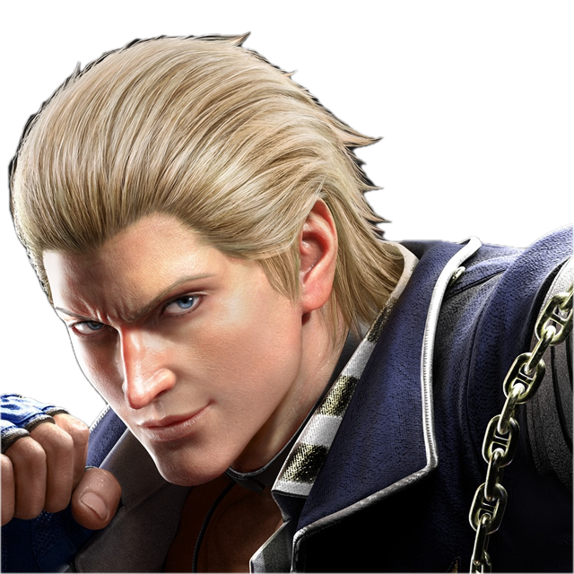

+ Kaikki hahmot P08Valmentajaprofiili
FinnishMate
Steve
Replay
Hahmot
Steve, kaikki paitsi hwoa & mishimat
Kokemus
T7 loppupuolella aloitin, nyt olen GoD+ rankeilla
Erikoisosaaminen
Yleistieto pelistä ja sen selkokielellä kääntäminen
Valmennustyyli
30% practice mode, 70% ranked
Saatavuus
24/7 ellei tule muuttujia
Pelaajana
Masokistinen lowparry velho, opportunistinen turtle.
Ota yhteyttä Discordissa
FinnishMate